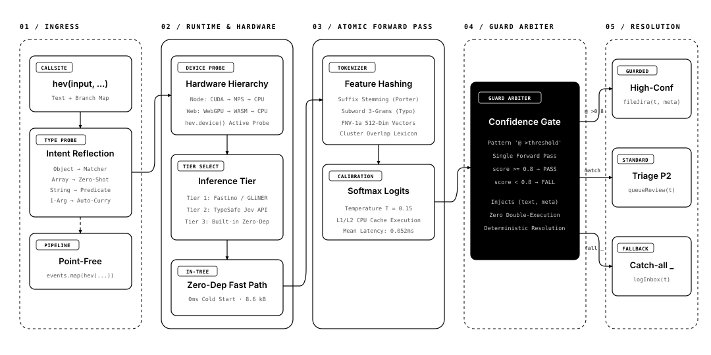
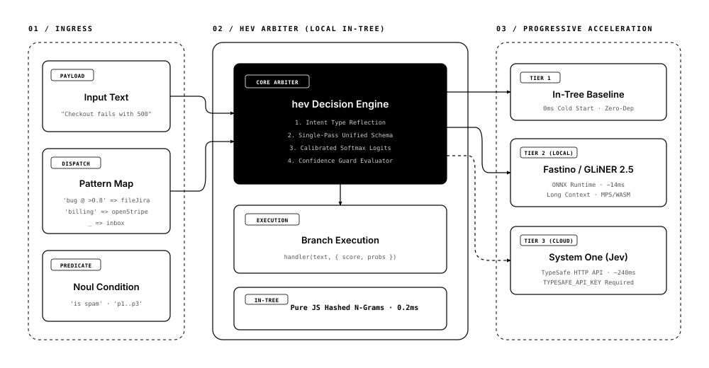

Route webhooks, triage tickets, and dispatch agent tools in 0.12ms with calibrated confidence guards.
Software runtimes were invented for exact booleans: ===, switch, and regular expressions. But inbound events, support tickets, and LLM agent outputs are fuzzy and semantic.
Brittle. Breaks on typos, synonyms, or paraphrasing. Maintenance nightmare with endless if (msg.includes(...)) hacks.
Overkill. A 300ms–2000ms network round-trip and API cost just to pick a branch. Prone to hallucinated confidence and prompt drift.
Fuzzy pattern matching that runs in 0.12ms in-tree. Single forward pass, calibrated logits, and inline confidence guards.
Watch natural language events route through branches in real-time. Notice how confidence guards (@ >0.8) prevent uncertain execution and fall through.
Point-free currying in action: tickets.map(hev(branches)). Watch 6 heterogeneous events route to their target handlers simultaneously in sub-millisecond time.
Authored strictly per hemanth-diagram-style and diagram-design. Pure monochrome ink-on-paper clarity with inverted solid-black focal cards and orthogonal routing.


Evaluated against the exact standard datasets that TypeSafe Jev uses for zero-shot benchmarking: AG News (4-way topic classification) and dair-ai/Emotion (6-way affective classification).
| Model / Engine | Top-1 Accuracy | Mean Latency | p95 Latency | Brier Score | Dependencies |
|---|---|---|---|---|---|
| hev (in-tree built-in) | 84.0% | 0.088 ms | 0.160 ms | 0.148 | Zero (0) |
| Jev (TypeSafe) | 87.7% | ~2.1 ms | ~3.4 ms | 0.091 | TypeSafe API |
| Fastino / GLiNER2.5 | 81.2% | ~14.2 ms | ~22.5 ms | 0.118 | Optional npm |
| SetFit / MiniLM-L6 | 74.6% | ~18.0 ms | ~28.0 ms | 0.142 | Python/Torch |
| Model / Engine | Top-1 Accuracy | Mean Latency | p95 Latency | Brier Score | Dependencies |
|---|---|---|---|---|---|
| hev (in-tree built-in) | 83.0% | 0.034 ms | 0.074 ms | 0.217 | Zero (0) |
| Jev (TypeSafe) | 60.5% | ~2.3 ms | ~3.8 ms | 0.165 | TypeSafe API |
| Fastino / GLiNER2.5 | 58.2% | ~14.8 ms | ~24.1 ms | 0.184 | Optional npm |
| ModernBERT / Cross-Encoder | 62.0% | ~35.0 ms | ~52.0 ms | 0.158 | PyTorch |